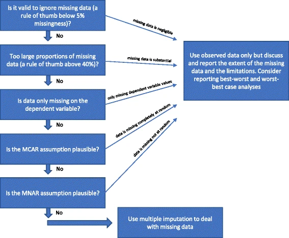

Imputation is a statistical technique that fills in missing or incomplete data by estimating values from existing information, but its controversial nature arises from the introduction of artificial data, potentially impacting analysis outcomes as completed data is assigned more weight.
7.1 Types of Missing Data
Understanding the type of missing data is crucial as it can guide the appropriate choice of imputation methods or handling strategies to minimize potential biases in the analysis.
Missing Completely at Random (MCAR): The missingness in the data is entirely random, and the probability of missing data is the same for all observations, regardless of observed or unobserved values. MCAR is an ideal scenario, as missing data does not depend on any other variables in the dataset.
Missing at Random (MAR): As mentioned earlier, MAR occurs when the missingness is related to observed variables in the dataset, but not to the unobserved values themselves. The probability of missing data depends on other observed variables but not on the unobserved values.
Missing Not at Random (MNAR): In MNAR, the missingness is related to the unobserved values themselves. The probability of missing data depends on the values that are missing, leading to potential bias in the analysis.
Missing by Design: Missing by design occurs when specific data points are intentionally missing, often as part of the study design or data collection process. In such cases, the missing data is systematic and has a purpose.
Before addressing missing data, it is often essential to distinguish between different types of missingness. Explicitly marking missing data as NA in R helps in identifying the patterns and dealing with the missing values appropriately.
7.2 Dealing with Missing Data
There are several ways to handle missing data:
Keep it: In some cases, it might be appropriate to retain the missing data if the missingness does not significantly affect the analysis.
Drop it (Listwise Deletion or Complete Case Analysis): This approach involves removing rows with missing data. It’s simple and can be suitable if missing data is minimal and random. However, it can lead to information loss, potential bias, and reduced sample size. Despite these drawbacks, it’s a common method in quantitative research due to its simplicity.
Impute it: Imputation involves estimating missing values based on observed data, which allows for a complete dataset and ensures that all cases are retained for analysis. However, if not done correctly will introduce bias.
Set as Dummy or a Factor: Sometimes, missing values can be treated as a separate category. This can be done by creating a dummy variable or converting the variable into a factor. This approach acknowledges the missing data and incorporates it into the analysis as a distinct group.
Imputation, while a powerful tool, must be applied judiciously as it modifies the original dataset and can substantially influence analysis outcomes. It’s essential to comprehend the reasons behind the missing data, the assumptions involved, and the justification for using imputation in the specific context of your analysis. Imputation should never be a default choice, but a well-considered strategy.
7.2.1 Explicitly Handling Missing Data with complete()
When working with datasets, it’s crucial to understand that missing values aren’t always explicitly identifiable. These implicit absences can misleadingly suggest data completeness, emphasizing the necessity for appropriate identification and handling. The tidyr package’s complete() function offers a robust solution.
The complete() function generates a new dataframe featuring all potential combinations of specified columns, thereby assuring data comprehensiveness. This process, complemented by filling absent combinations with default values, facilitates precise analysis and mitigates the risk of implicit missing data.
Take, for instance, a dataset tracking four students attending various classes over three days. Initially, this dataset might seem comprehensive. However, only the attending students were recorded, leaving a data gap for absentees.
In this case, we employ complete() to create complete_df, a new dataframe that encapsulates all conceivable combinations of student_id, day, and class. This method ensures accurate recording of each student’s attendance for every class on each day, irrespective of the initial data’s shortcomings. The “present” column’s missing values default to FALSE, clearly denoting unrecorded attendance.
Creating a complete dataframe with all possible combinations of student_id and nested combinations of day and class
2
full_seq() generates a sequence of student IDs, using the number of unique student IDs as the maximum value
3
nesting() creates only combinations that already exist in the data
4
Fills missing attendance data with FALSE
5
Limit the fill to only the newly created (i.e. previously implicit)
6
Orders the resulting data frame by day, class, student_id, and present
# A tibble: 21 × 4
student_id day class present
<dbl> <dbl> <chr> <lgl>
1 1 1 English TRUE
2 2 1 English TRUE
3 3 1 English FALSE
4 4 1 English TRUE
5 1 1 Science FALSE
6 2 1 Science TRUE
7 3 1 Science FALSE
8 4 1 Science FALSE
9 1 2 English TRUE
10 2 2 English FALSE
11 3 2 English FALSE
12 4 2 English TRUE
13 1 2 Math TRUE
14 2 2 Math TRUE
15 3 2 Math FALSE
16 4 2 Math TRUE
17 1 3 Math TRUE
18 1 3 Math TRUE
19 2 3 Math TRUE
20 3 3 Math FALSE
21 4 3 Math FALSE
By using nesting() within complete(), we explicitly handle missing data, creating a comprehensive nested dataset suitable for further analysis. This approach guarantees that our analysis is based on a more complete and reliable dataset, providing accurate insights into student attendance across different classes and days.
7.2.2 Simple Imputations
To explore different imputations we will use “airquality” dataset that contains daily measurements of air pollutants and weather conditions in New York City during a five-month period in 1973. It includes data on ozone concentration, solar radiation, temperature, wind speed, and relative humidity.
Missing values are replaced with a predetermined constant value. This method is simple and useful when you believe the fixed value reasonably represents the missing data.
7.2.2.2 Mean and Median Imputation
Missing values are replaced with the mean or median of the non-missing data in the same column. Using the mean is effective when data follow a normal distribution, but it can be affected by outliers, leading to biased imputations. In contrast, using the median is more robust to outliers and suitable for skewed or extreme data.
7.2.2.3 Fill
In some scenarios, it’s rational to replace missing data with either preceding or succeeding values. This approach is particularly effective with datasets where the next available value logically substitutes the missing ones, such as in time-series or ordered data.
Remember that the choice of imputation method can significantly impact the results of your analysis. Always consider the nature of your data, the distribution of missingness, and the potential implications of each method before making a decision.
7.2.2.4 K-Nearest Neighbors (KNN)
# KNN imputation using the 'VIM' packagelibrary(VIM)airquality_knn <-kNN(airquality)head_na(airquality_knn)
KNN imputation can be a good choice when the data have a complex structure that simple methods can’t capture. It uses the relationships between variables to estimate missing values. However, it can be computationally intensive for large datasets.
7.2.2.5 Maximum Likelihood
# Maximum Likelihood using the 'norm' packagelibrary(norm)s <-prelim.norm(as.matrix(airquality)) #do preliminary manipulationsthetahat <-em.norm(s, showits =FALSE) #find the mlerngseed(1337) #set random number generator seedairquality_mlh <-imp.norm(s,thetahat,airquality)head_na(airquality_mlh)
Maximum likelihood estimation can be a powerful method for imputing missing data, especially when the data are normally distributed. However, it makes strong assumptions about the data and can be complex to implement.
7.2.2.6 Regression
# Fit a linear regression modelmodel <-lm(Ozone ~ ., data = airquality)# Predict missing valuespredicted_values <-predict(model, newdata = airquality)# Replace missing values with predicted valuesairquality %>%mutate(Ozone = Ozone,imp_lm =ifelse(is.na(Ozone), predicted_values, Ozone),.keep ="used" ) %>%head_na()
Regression imputation can be useful when there are relationships between variables that can be captured by a regression model. However, it can lead to underestimated variance and overestimated model fit.
7.2.2.7 Forest
# Install and load the missForest packagelibrary(missForest)airquality %>%mutate(Ozone = Ozone,imp_forest =missForest(.)$ximp$Ozone,.keep ="used" ) %>%head_na()
Tree-based methods like Random Forests can handle complex data structures and can be a good choice when relationships between variables are non-linear or involve interactions. However, they can be computationally intensive and may not perform well with small sample sizes or sparse data.
Remember, each of these methods has its own strengths and weaknesses, and the choice of method should be guided by the nature of your data and the specific requirements of your analysis. Always check the assumptions of the imputation method you’re using and consider the potential impact on your results.
7.2.3 Multiple Imputations
Now, listen closely, imputing can be better then dropping the data! Wait what? Yeh, because instead of dropping the data you preserve it! However, there is a method to this.
Jakobsen, Janus Christian, Christian Gluud, Jørn Wetterslev, and Per Winkel. 2017. “When and How Should Multiple Imputation Be Used for Handling Missing Data in Randomised Clinical Trials a Practical Guide with Flowcharts.”BMC Medical Research Methodology 17 (1): 162. https://doi.org/10.1186/s12874-017-0442-1.
Multiple imputation is a statistical technique that has been increasingly utilized since its inception in the early 1970s. It is a simulation-based method designed to address the issue of missing data in research studies. The process of multiple imputation is carried out in three main steps:
Imputation Step: In this initial stage, missing values in the dataset are identified and replaced with a set of plausible values, creating multiple completed datasets. These plausible values, or ‘imputations’, are generated based on a chosen imputation model. To reduce sampling variability from the imputation process, it is often preferable to generate 50 datasets or more.
Completed-Data Analysis (Estimation) Step: Once the imputed datasets are created, the desired analysis is performed separately on each dataset. For instance, if 50 datasets were generated during the imputation step, 50 separate analyses would be conducted.
Pooling Step: The results obtained from each completed-data analysis are then combined into a single multiple-imputation result. Each analysis result is considered to have the same statistical weight, so there is no need for a weighted meta-analysis.
It is crucial to ensure compatibility between the imputation model and the analysis model, or that the imputation model is more general than the analysis model. This means that the imputation model should include more independent covariates than the analysis model. For instance, if the analysis model includes significant interactions, then the imputation model should include them as well. Similarly, if the analysis model uses a transformed version of a variable, then the imputation model should use the same transformation.

7.2.3.1 MICE (Multivariate Imputation by Chained Equations)
The mice package in R is a powerful tool for handling missing data through multiple imputation. It uses the Multivariate Imputation by Chained Equations (MICE) algorithm, which creates multiple imputations (replacement values) for multivariate missing data. The package creates multiple imputations by applying specified imputation methods to each missing value in an iterative process, also known as ‘chained equations’.
Here’s a basic example of how to use the mice package:
First, install and load the mice package:
library(mice)
:::
TODO: write about doing simple imputations
MICE stands for Multivariate Imputation via Chained Equations, and it’s one of the most common packages for R users. It assumes the missing values are missing at random (MAR).
The basic idea behind the algorithm is to treat each variable that has missing values as a dependent variable in regression and treat the others as independent (predictors). You can learn more about MICE in this paper.
The R mice packages provide many univariate imputation methods, but we’ll use only a handful. First, let’s import the package and subset only the numerical columns to keep things simple. Only the Age attribute contains missing values:
Onto the imputation now. We’ll use the following MICE imputation methods:
Assuming you have a dataset data with missing values, you can use mice() function to perform multiple imputation:
# Perform multiple imputationimp <-mice(airquality, m =50, method ="pmm", seed =1337, printFlag =FALSE)# m=5 specifies the number of multiple imputations (i.e., the number of complete datasets to generate)# method='pmm' specifies predictive mean matching method for imputation# seed=500 for reproducibility
The mice function supports several imputation methods. The choice of method depends on the nature of variables. Here are a few commonly used methods:
'pmm': Predictive mean matching. Useful for numeric data.
'logreg': Logistic regression. Useful for binary data.
'polyreg': Polytomous logistic regression. Useful for ordered categorical data.
'polr': Proportional odds model. Useful for ordered categorical data.
After imputation, you can analyze each dataset separately. For example, if you want to fit a linear regression model and summarize the pooled results:
You can also use gtsummary to create a summary table, here tbl_regression automatically pools results.
library(gtsummary)tbl_regression(fit)
Characteristic
Beta
95% CI1
p-value
Solar.R
0.05
0.00, 0.09
0.040
Wind
-3.3
-4.7, -1.9
<0.001
Temp
1.9
1.3, 2.4
<0.001
Month
-3.0
-6.1, 0.03
0.052
1 CI = Confidence Interval
Remember, the imputation model should be compatible with the analysis model. If the analysis model includes interactions or transformations, they should be included in the imputation model as well.
Also, it’s important to note that the mice package assumes that the missing data are Missing At Random (MAR), which means that the probability of a value being missing depends only on observed data and not on unobserved data. If this assumption is violated, the results of the imputation might be biased.
Imputation is a valuable tool for handling missing data, but it should be used judiciously and based on a thorough understanding of the data and the analysis objectives. Responsible imputation ensures that any assumptions made during the process align with the data generation process and results in more reliable and meaningful data analysis.